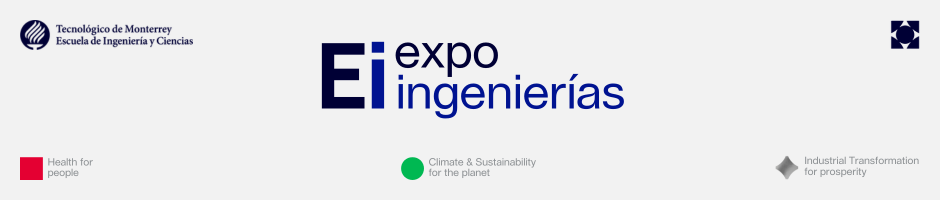

Muestra de proyectos de la Escuela de Ingeniería y Ciencias, evaluados por el jurado de Tech Fest 2026.
Expo-Ingenierías es el espacio para presentar proyectos propios o de clase frente a un jurado especializado y al público asistente. Se evalúa innovación, integración técnica y la calidad de la presentación. Consulta la convocatoria para conocer los formatos de entrega y el reglamento para los criterios de evaluación.